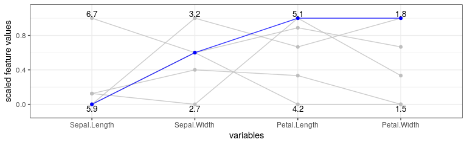

The counterfactuals package provides various (model-agnostic) counterfactual explanation methods via a unified R6-based interface.
Counterfactual explanation methods address questions of the form: “For input x, the model predicted ŷ. What needs to be changed in x for the model to predict a desired outcome y′ instead?”.
Denied loan applications serve as a common example; here a counterfactual explanation (or counterfactual for short) could be: “The loan was denied because the amount of €30k is too high given the income. If the amount had been €20k, the loan would have been granted.”
For an introduction to counterfactual explanation methods, we recommend Chapter 9.3 of the Interpretable Machine Learning book by Christoph Molnar. The package is based on the R code underlying the paper Multi-Objective Counterfactual Explanations (MOC).
Available methods
The following counterfactual explanation methods are currently implemented:
- Multi-Objective Counterfactual Explanations (MOC)
- Nearest Instance Counterfactual Explanations (NICE) (an extended version)
- WhatIf (an extended version)
Installation
You can install the development version from GitHub with:
# install.packages("devtools")
devtools::install_github("dandls/counterfactuals")Get started
In this example, we train a randomForest on the iris dataset and examine how a given virginica observation would have to change in order to be classified as versicolor.
Fitting a model
First, we train a randomForest model to predict the target variable Species, omitting one observation from the training data, which is x_interest (the observation x⋆ for which we want to find counterfactuals).
rf = randomForest(Species ~ ., data = iris[-150L, ])Setting up an iml::Predictor() object
We then create an iml::Predictor object, which serves as a wrapper for different model types; it contains the model and the data for its analysis.
predictor = Predictor$new(rf, type = "prob")Find counterfactuals
For x_interest, the model predicts a probability of 8% for class versicolor.
x_interest = iris[150L, ]
predictor$predict(x_interest)
#> setosa versicolor virginica
#> 1 0 0.08 0.92Now, we examine what needs to be changed in x_interest so that the model predicts a probability of at least 50% for class versicolor.
Here, we want to apply WhatIf and since it is a classification task, we create a WhatIfClassif object.
wi_classif = WhatIfClassif$new(predictor, n_counterfactuals = 5L)Then, we use the find_counterfactuals() method to find counterfactuals for x_interest.
cfactuals = wi_classif$find_counterfactuals(
x_interest, desired_class = "versicolor", desired_prob = c(0.5, 1)
)The counterfactuals object
cfactuals is a Counterfactuals object that contains the counterfactuals and has several methods for their evaluation and visualization.
cfactuals
#> 5 Counterfactual(s)
#>
#> Desired class: versicolor
#> Desired predicted probability range: [0.5, 1]
#>
#> Head:
#> Sepal.Length Sepal.Width Petal.Length Petal.Width
#> 1: 5.9 3.2 4.8 1.8
#> 2: 6.0 2.7 5.1 1.6
#> 3: 5.9 3.0 4.2 1.5The counterfactuals are stored in the data field.
cfactuals$data
#> Sepal.Length Sepal.Width Petal.Length Petal.Width
#> 1: 5.9 3.2 4.8 1.8
#> 2: 6.0 2.7 5.1 1.6
#> 3: 5.9 3.0 4.2 1.5
#> 4: 6.7 3.0 5.0 1.7
#> 5: 6.0 2.9 4.5 1.5With the evaluate() method, we can evaluate the counterfactuals using various quality measures.
cfactuals$evaluate()
#> Sepal.Length Sepal.Width Petal.Length Petal.Width dist_x_interest nr_changed dist_train dist_target
#> 1: 5.9 3.2 4.8 1.8 0.03354520 2 0 0
#> 2: 6.0 2.7 5.1 1.6 0.05902778 3 0 0
#> 3: 5.9 3.0 4.2 1.5 0.06938559 2 0 0
#> 4: 6.7 3.0 5.0 1.7 0.07020951 3 0 0
#> 5: 6.0 2.9 4.5 1.5 0.07403484 4 0 0One visualization option is to plot the frequency of feature changes across all counterfactuals using the plot_freq_of_feature_changes() method.
cfactuals$plot_freq_of_feature_changes()
Another visualization option is a parallel plot—created with the plot_parallel() method—that connects the (scaled) feature values of each counterfactual and highlights x_interest in blue.
cfactuals$plot_parallel()